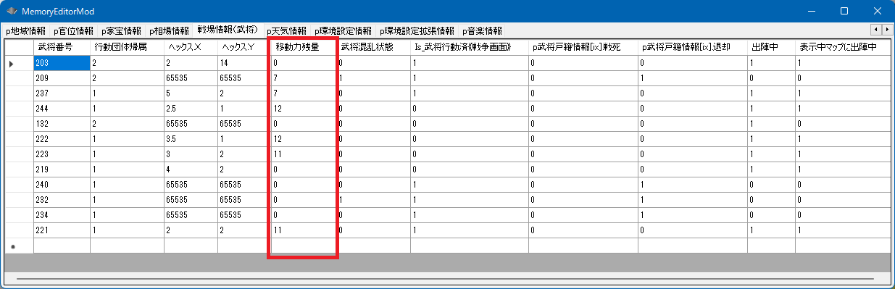

天翔記では、「移動残量(機動力)」という概念があり、移動や行動をするとこれが減る。
移動力には、ターンの切り替わり目等による「回復」と、行動などによる「消費」がある。
(目一杯移動すると０になるが、少しの移動や移動しない時などは移動残量が蓄積される)
又、天翔記の元来の仕様では移動残量15がMAXであるが、それを超えて設定することをも可能とする。
int Get_武将移動力残量(int 武将番号【配列用】)
int Set_武将移動力残量(int 武将番号【配列用】, int 移動力残量)

void カスタム::On_残りターン変更《戦争画面》(int 残りターン数) {
番号リスト型 list = Get_出陣中の武将番号リスト【配列用】《表示中マップ》();
for(int iBushouID : list) {
// 現在の戦闘値を100以上で、戦才(家宝含む)が160以上なら
if (Get_戦闘値(iBushouID) >= 50 && p武将情報[iBushouID].最大戦才 >= 80) {
// 凄まじい移動力残量を与える。(元来天翔記では15を超える数値にはならない)
Set_武将移動力残量(iBushouID, 50);
}
デバッグ出力 << Get_名字(iBushouID) + Get_名前(iBushouID) << "の移動力残量は" << Get_武将移動力残量(iBushouID) << "です" << endl;
}
}
On_移動力残量変更時《戦争画面》 を参照のこと。
「戦争 - 武将ユニットの移動力」に関する主な所は以上となります。 詳しくは「戦場情報型.h」などを参照してください。